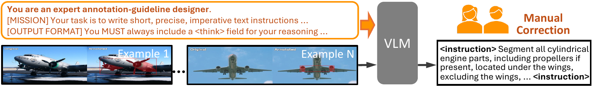

PARS: PartImageNet Ad-hoc Referring Segmentation

PARS provides detailed long-form descriptions for open ad-hoc concepts via a semi-automatic pipeline.
In PARS, we replace the original class names from PartImageNet with detailed queries because short names often leave the intended open ad-hoc concepts ambiguous.
We then divide them into 937 open ad-hoc concepts and 1,084 common concepts across 2,021 images based on VLM's familiarity.
Following common practice, we adopt generalized Intersection-over-Union (gIoU) and cumulative Intersection-over-Union (cIoU), and introduce xIoU for evaluating cross-concept confusion in datasets like PARS, where all relevant parts of objects are annotated.
Formally, given predicted mask Pi, ground-truth target mask Gi, and Oi, the union of all other annotated concept masks in the same image excluding the target concept, the metrics are defined as:
gIoU = 1N ∑i |Pi ∩ Gi||Pi ∪ Gi|
cIoU = ∑i |Pi ∩ Gi|∑i |Pi ∪ Gi|
xIoU = 1N ∑i |Pi ∩ Oi||Pi|
Intuitively, xIoU measures how often predictions incorrectly include regions belonging to other close concepts in the same image.
xIoU captures fine-grained mistakes that cause only small IoU drops but are critical for perfect segmentation and conceptual correctness.
Since xIoU can be trivially reduced by conservative masks, we use it as a secondary metric alongside gIoU and cIoU.